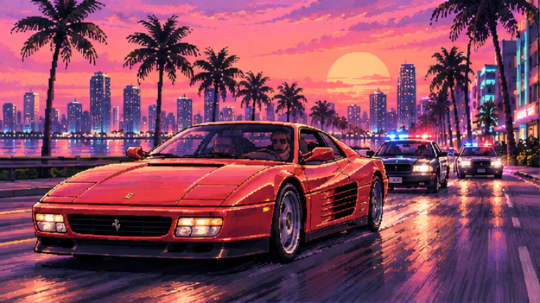
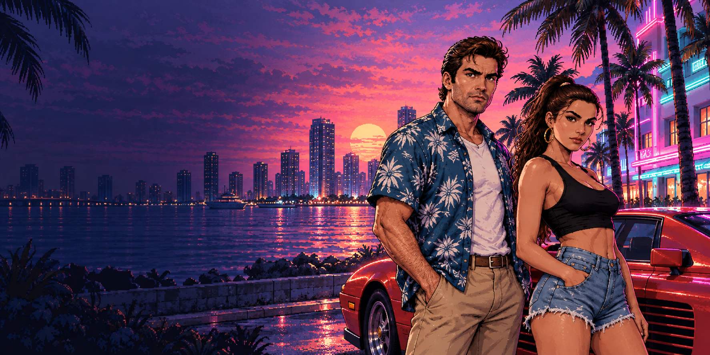
ТВОЙ БИЛЕТ В ВАЙС-СИТИ
ЖДЁМ
В ДВИЖЕ
Пока город готовится к большому возвращению, занимай водительское, уходи от копов и проверь, насколько хорошо ты знаешь легенду.
ДО GTA VI19.11.2026 ↘
—ДНЕЙ
:—ЧАСОВ
:—МИНУТ
:—СЕКУНД
VICE CITY · AFTER HOURSФАН-ПРОЕКТ · НЕ СВЯЗАН С ROCKSTAR GAMES
НОЧЬ ДЛИННАЯ ✳ УЛИЦЫ ЗОВУТ ✳ ВЫБИРАЙ СВОЙ МАРШРУТ ✳ VICE CITY ARCADE ✳ НОЧЬ ДЛИННАЯ ✳ УЛИЦЫ ЗОВУТ ✳ ВЫБИРАЙ СВОЙ МАРШРУТ
01 / СЕЛЕКТ ДЛЯ ТЕБЯ
ЗАЛЕТАЙ В ИГРУ
Короткие браузерные испытания. Никаких загрузок — только ты и улица.
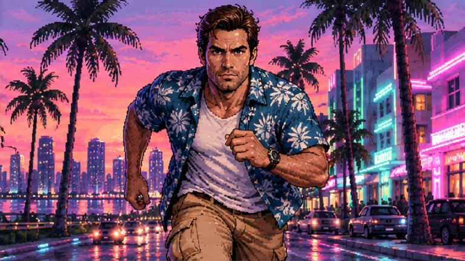
Chase Me
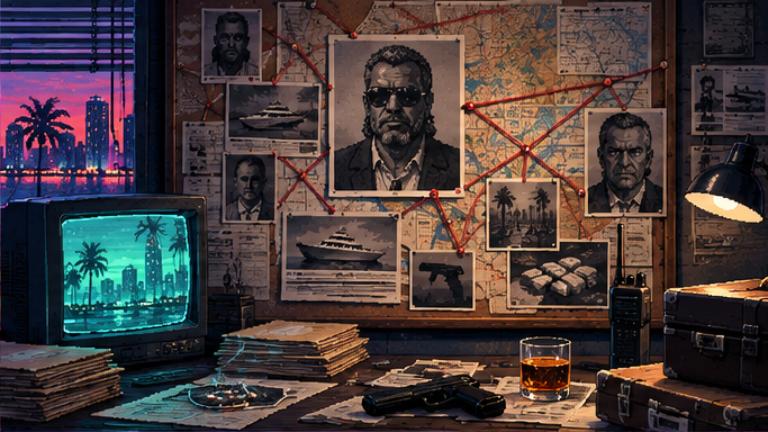
Легенда или слух?
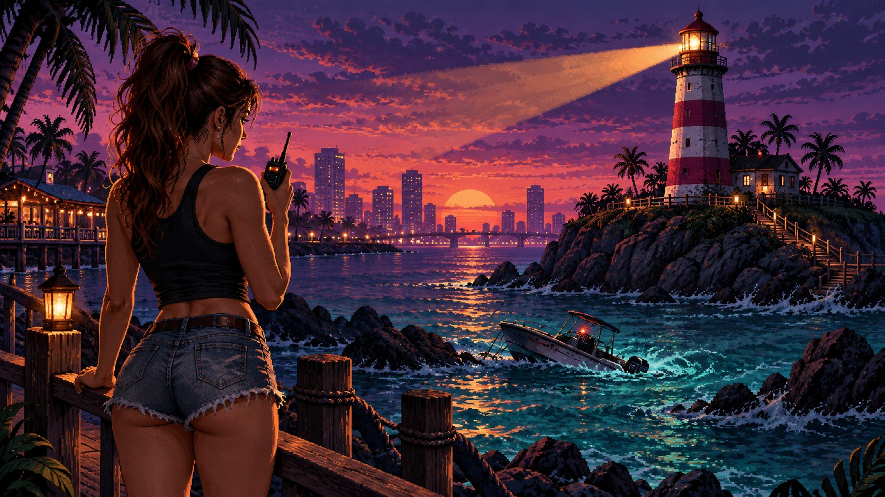
После заката
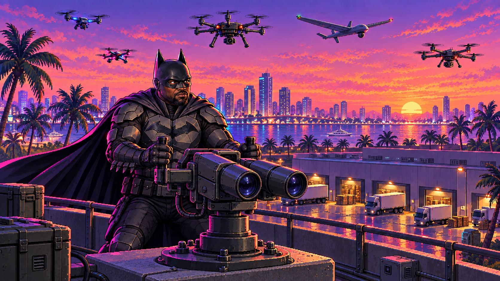
Последняя доставка
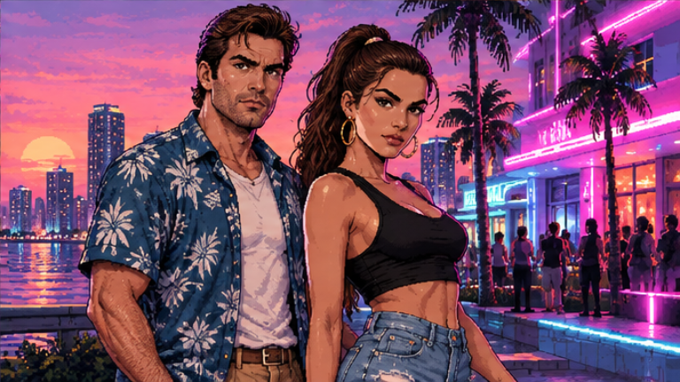
Дело на двоих
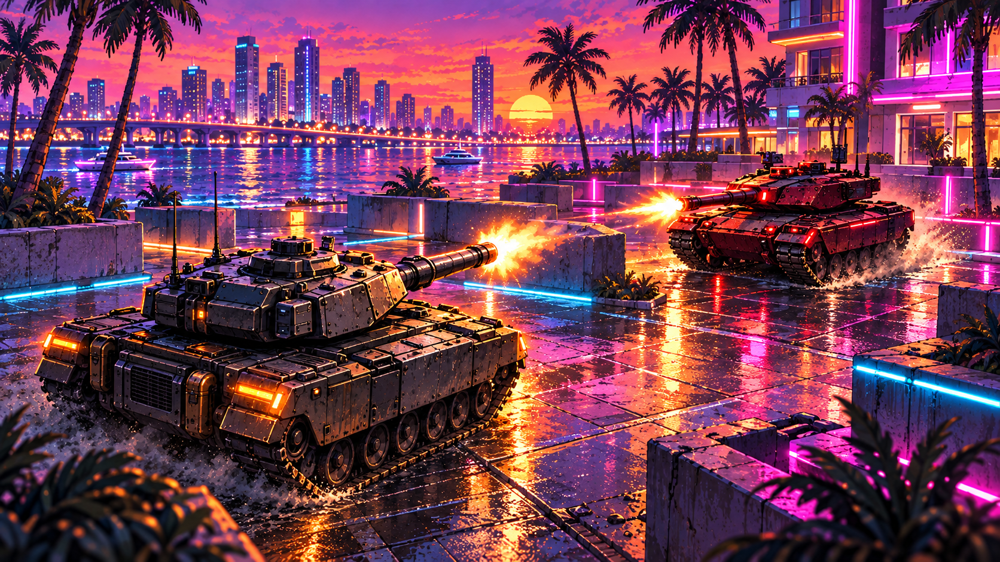
Neon Tanks
07ИГР В АРКАДЕ
∞ПОПЫТОК НА РЕКОРД
0ЗАГРУЗОК НУЖНО
02 / ПРОВЕРЕНО ПО ПЕРВОИСТОЧНИКАМ
НА РАДАРЕ GTA VI
Анонсы, видео и полезное досье. У каждого материала — дата и официальный источник.
8 МАТЕРИАЛОВ
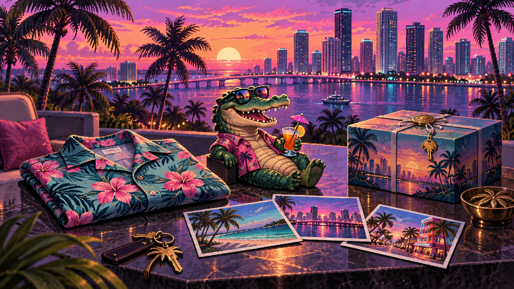
ИЛЛЮСТРАЦИЯ РЕДАКЦИИ01НОВОЕ
Сувениры Леониды. Игра — отдельно
The Goodtime State — коллекционный набор с фигуркой Macca the Gator, аксессуарами и сувенирами. Выход намечен на 19 ноября. Сама GTA VI в комплект не входит.
ROCKSTAR NEWSWIRE ↗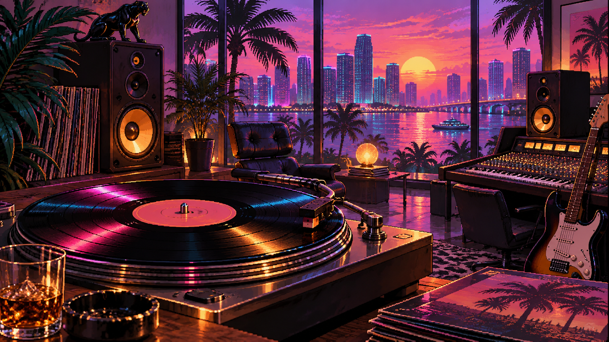
ИЛЛЮСТРАЦИЯ РЕДАКЦИИ02НОВОЕ
Звук Леониды: 34 новых трека
GTA VI: The Album создан вместе с Atlantic Records и выйдет 19 ноября. Rockstar анонсировала 34 оригинальных трека; первые шесть синглов уже доступны.
ROCKSTAR NEWSWIRE ↗ИЛЛЮСТРАЦИЯ РЕДАКЦИИ03
ОФИЦИАЛЬНО
Вайс-Сити в движении
Расширенный ролик Extended Look целиком записан в игре на PlayStation 5. Он показывает Леониду и новые сцены истории Джейсона и Люсии.
ROCKSTAR · ВИДЕО ↗ИЛЛЮСТРАЦИЯ РЕДАКЦИИ04
СПРАВКА
PS5 и Xbox. Что внутри изданий?
Rockstar перечисляет PS5, Xbox Series X|S и версии Standard и Ultimate. Коробочное издание содержит код загрузки; диска внутри нет.
ROCKSTAR SUPPORT ↗ИЛЛЮСТРАЦИЯ РЕДАКЦИИ05
АРХИВ
Предзаказы GTA VI открыты
Rockstar объявила начало предзаказов 25 июня. Кроме Standard доступна Ultimate Edition с дополнительными автомобилями, оружием и одеждой для истории героев.
ROCKSTAR NEWSWIRE ↗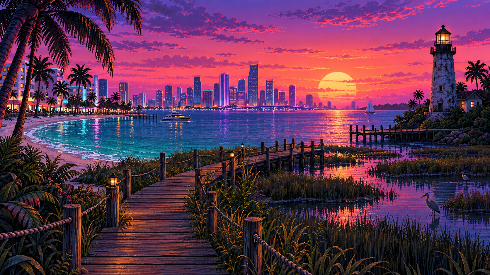
ИЛЛЮСТРАЦИЯ РЕДАКЦИИ06АРХИВ
Загрузка — за неделю до старта
Цифровую GTA VI можно начать загружать 12 ноября. Запуск намечен на 19 ноября для PS5 и Xbox Series X|S. Даты опубликованы в официальном анонсе.
TAKE-TWO · PDF ↗ИЛЛЮСТРАЦИЯ РЕДАКЦИИ07
АРХИВ
19 ноября 2026 — плановый релиз
Rockstar перенесла запуск GTA VI на 19 ноября 2026 года. Эта дата по-прежнему указана на официальном сайте. Следим за дальнейшими объявлениями.
ROCKSTAR NEWSWIRE ↗ИЛЛЮСТРАЦИЯ РЕДАКЦИИ08
АРХИВ
Джейсон и Люсия: история на двоих
Второй трейлер представил Джейсона и Люсию. Неудачное дело втягивает их в заговор по всей Леониде; выбраться они смогут, только полагаясь друг на друга.
ROCKSTAR NEWSWIRE ↗ПРОВЕРЕНО 27.09.2026 · ROCKSTAR GAMES / TAKE-TWO
Картинки — фан-иллюстрации аркады, не кадры GTA VI. Даты относятся к публикациям; старые анонсы отмечены архивом.
03 / ТВОЯ ЧАСТОТА
РАДИО ГОРОДА
Выбери настроение. Включи музыку для прогулки по сайту или следующего заезда.
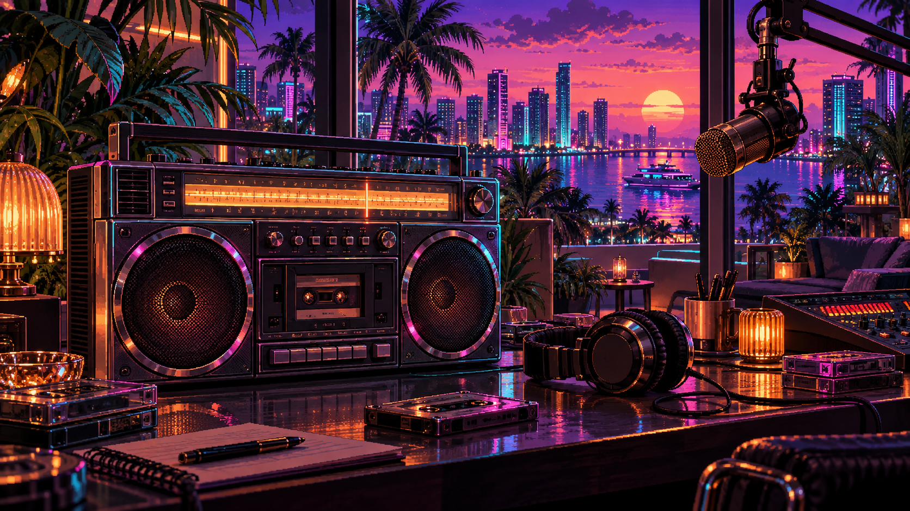
VICE CITY ARCADE ORIGINALSТВОЙ ГОРОД.
ТВОЙ РИТМ.
● ВНЕ ЭФИРАТВОЙ РИТМ.
VC / AUDIO DECK94.6 FM
OCEAN FM
Ocean Afterglow
Тёплый синтвейв для поездки вдоль океана.
0:00—:—
Эфир включается только по твоему нажатию.
Три оригинальные инструментальные петли, созданные для аркады. Частоты вымышленные; это музыка сайта, не радиостанции или саундтрек GTA VI.
04 / ПОСЛЕ ТИТРОВ
СДЕЛАНО ФАНАТАМИ
VICE CITY ARCADE — маленькая игровая остановка по дороге к большому релизу.